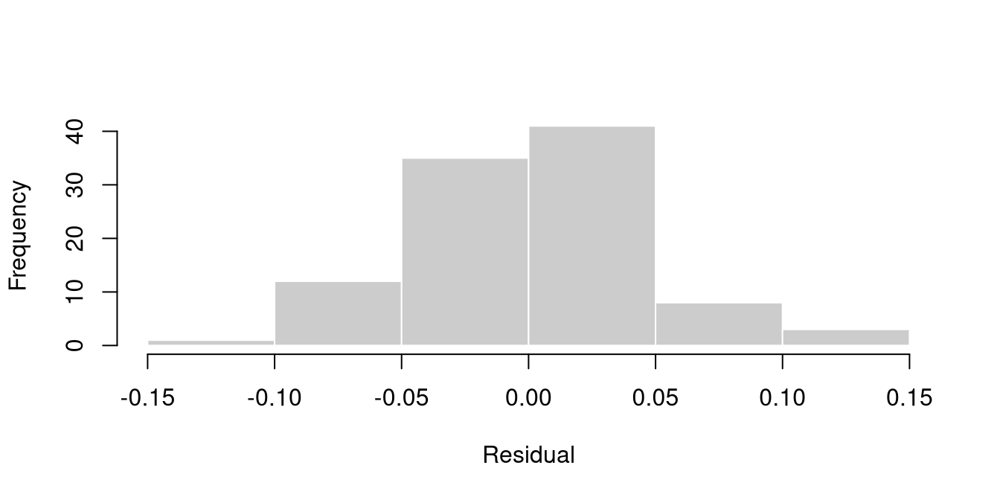

data(nec_data)
model_LL4 <- drm(y ~ x, data = nec_data, fct = LL.4())Frequentist fitting with drc
The same questions asked of a maximum-likelihood engine, and where the answers differ
Scope
This is reference material, not part of the taught course.
drc (Ritz et al. 2015) fits concentration-response models by maximum likelihood. It is mature, widely used, and has far more in it than is shown here. The purpose of this page is narrow: to show that most of what the course does with bayesnec can also be done frequentist, and to be precise about where the two engines answer the same question and where they do not.
For drc itself, better sources exist:
- Christian Ritz’s dose-response site
- the
drcpaper in PLoS ONE, and its supplement of worked examples (Ritz et al. 2015) - community material at rstats4ag.org
The section on differences at the end is the part that is specific to this course, and is the reason this page exists.
Fitting
drm() is the fitting function. It takes a formula, the data, and a mean function through fct. Here is the dataset used in module 2, fitted with a four-parameter log-logistic curve.
LL.4() is one of a large catalogue of mean functions. getMeanFunctions() lists them.
Reading the fit
summary(model_LL4)
Model fitted: Log-logistic (ED50 as parameter) (4 parms)
Parameter estimates:
Estimate Std. Error t-value p-value
b:(Intercept) 7.8488e+00 6.4920e-01 12.0898 <2e-16 ***
c:(Intercept) 2.0154e-05 4.3897e-02 0.0005 0.9996
d:(Intercept) 8.9732e-01 6.0071e-03 149.3778 <2e-16 ***
e:(Intercept) 1.9950e+00 3.5440e-02 56.2917 <2e-16 ***
---
Signif. codes: 0 '***' 0.001 '**' 0.01 '*' 0.05 '.' 0.1 ' ' 1
Residual standard error:
0.04775948 (96 degrees of freedom)The parameters of a four-parameter drc model are labelled b, c, d and e:
| meaning | bayesnec equivalent |
|
|---|---|---|
b |
slope, sometimes the hill slope | beta or slope |
c |
lower asymptote | bot |
d |
upper asymptote | top |
e |
inflection point | ec50 |
Where the asymptotes span the full possible response range, e is the EC50.
The summary reports a standard error and a test of whether each parameter differs from zero. That test is rarely the question of interest — a lower asymptote indistinguishable from zero is a reason to fit a three-parameter model, not evidence of anything about toxicity.
Residuals can be extracted and checked, which is meaningful for a continuous response and not for binomial or count data:
hist(residuals(model_LL4), main = "", xlab = "Residual", col = "grey80",
border = "white")
shapiro.test(residuals(model_LL4))
Shapiro-Wilk normality test
data: residuals(model_LL4)
W = 0.98855, p-value = 0.5498
Effect concentrations
ED() returns effect concentrations. Two of its arguments decide what is actually being computed, and both matter more than they appear to.
args(drc:::ED.drc)function (object, respLev, interval = c("none", "delta", "fls",
"tfls"), clevel = NULL, level = ifelse(!(interval == "none"),
0.95, NULL), reference = c("control", "upper"), type = c("relative",
"absolute"), lref, uref, bound = TRUE, od = FALSE, vcov. = vcov,
display = TRUE, pool = TRUE, logBase = NULL, multcomp = FALSE,
...)
NULLreference chooses what the effect is measured from, and defaults to "control" — the fitted response at dose zero. type chooses what it is measured to, and defaults to "relative", meaning a percentage of the fitted response range, from the upper asymptote down to the lower one.
ED(model_LL4, c(10, 50))
Estimated effective doses
Estimate Std. Error
e:1:10 1.507871 0.023089
e:1:50 1.995000 0.035440The word type does not mean the same thing in the two packages
This is the trap worth carrying away from this page.
bayesnec::ecx() also has a type argument, and its values do not correspond to drc’s:
drc"relative", the default, is a percentage of the fitted range. The closestbayesnecvalue is"range", not"relative".drc"absolute"means an absolute response value, so it corresponds tobayesnec’s"direct".bayesnec"absolute", the default there, is a percentage decline from the control to zero.drchas no equivalent.
Translating ecx(fit, type = "absolute") into ED(m, 10, type = "absolute") therefore does not ask the same question. It asks for the concentration at which the response equals 10, which for a response bounded near 1 does not exist:
try(ED(model_LL4, 10, type = "absolute", display = FALSE))When the two definitions coincide, and when they do not
They coincide exactly wherever the fitted lower limit is zero, because the range then is the distance from the control to zero.
coef(model_LL4)[["c:(Intercept)"]][1] 2.015351e-05That is the case here, which is why this dataset gives the same EC10 either way, and it is why three-parameter models with the lower limit fixed at zero are unambiguous.
Give the response a genuine non-zero floor and the two part company:
floored <- nec_data
floored$y <- 0.3 + 0.6 * floored$y
m_floor <- drm(y ~ x, data = floored, fct = LL.4())
cc <- coef(m_floor)[["c:(Intercept)"]]
dd <- coef(m_floor)[["d:(Intercept)"]]
# drc's default: 10% of the fitted range
ec10_range <- ED(m_floor, 10, display = FALSE)[1, 1]
# the same fit, asked for a 10% decline from the control, expressed as the
# equivalent percentage of the fitted range
level <- 100 * (dd - (dd - 0.10 * dd)) / (dd - cc)
ec10_control <- ED(m_floor, level, display = FALSE)[1, 1]
c(fitted_lower = cc, fitted_upper = dd,
EC10_range_referenced = ec10_range,
EC10_control_referenced = ec10_control) fitted_lower fitted_upper EC10_range_referenced
0.3443691 0.8376138 1.5110272
EC10_control_referenced
1.6199901 The same fitted curve yields two different EC10s, differing here by about seven per cent. Neither is wrong; they are answers to different questions. What is wrong is reporting one and calling it the other.
The practical rule: when comparing an ED() result against an ecx() result, establish first that both are referenced the same way, and say in the write-up which convention was used.
A no-effect estimate
drc reports no threshold parameter, so there is no NEC to be had from it. The NSEC can be computed from a drc fit, because it is defined from the fitted curve and the control variability rather than from a model parameter, and toxval provides it:
toxval::nsec(model_LL4, x_var = "x")[1] 1.1788306 0.9617242 1.2842021
attr(,"ecnsec_relativeP")
Prediction Lower Upper
1.6207422 0.2443135 3.1976479
attr(,"resolution")
[1] 1000
attr(,"sig_val")
[1] 0.01
attr(,"toxicity_estimate")
[1] "nsec"This is the one place where the frequentist route reaches a no-effect estimate of the kind module 3 describes.
Binomial data
A binomial response is given as successes over totals, with weights and type = "binomial":
data(daphnids)
daphnids.m1 <- drm(no / total ~ dose, weights = total, curveid = time,
data = daphnids, fct = LL.2(), type = "binomial")
ED(daphnids.m1, 50)
Estimated effective doses
Estimate Std. Error
e:24h:50 5134.03 1056.74
e:48h:50 1509.07 187.76Model selection and averaging
drc selects among candidates by information criterion rather than averaging over them.
mselect(model_LL4, list(LL.3(), W1.4(), W2.4())) logLik IC Lack of fit Res var
W2.4 174.0792 -338.1584 NA 0.001875953
LL.3 164.3041 -320.6081 NA 0.002257496
LL.4 164.3050 -318.6100 NA 0.002280968
W1.4 157.1969 -304.3938 NA 0.002629416drc does provide maED() for model-averaged effect concentrations, using Akaike weights and a Buckland unconditional interval. It is worth knowing two things about it before relying on it. It sums without removing missing values, so a single candidate whose root-finder fails renders the whole average missing. And it forms its weights as exp(-AIC/2) without centring on the minimum AIC, which underflows to zero for every candidate once AIC reaches a few thousand, as it does on individual-level data.
This is a genuine difference in philosophy rather than only in implementation. bayesnec averages by default over a candidate set; drc selects by default, and the selection is itself a source of uncertainty that the reported interval does not include.
Comparing groups
EDcomp() compares effect concentrations between curves fitted with curveid:
EDcomp(daphnids.m1, c(50, 50))
Estimated ratios of effect doses
Estimate Std. Error t-value p-value
24h/48h:50/50 3.4021279 0.8182594 2.9356556 0.0033284This is the frequentist counterpart to comparing posteriors, which module 7 covers. It returns a ratio with a confidence interval and a p-value, rather than a probability that one estimate is lower than the other.
Where the engines agree and where they differ
drc |
bayesnec |
|
|---|---|---|
| Estimation | maximum likelihood | Bayesian, HMC via Stan |
| Interval | delta-method confidence interval | credible interval from the posterior |
| Threshold estimate | none | NEC from threshold equations |
| No-effect estimate | NSEC via toxval |
NEC or NSEC |
| ECx reference | f(0), the fitted response at dose zero |
predicted mean at the lowest observed concentration |
| ECx default | percentage of the fitted range | percentage decline from control to zero |
| Candidate set | select one by AIC | average over the set by weight |
| Group comparison | ratio, confidence interval, p-value | probability of difference from the posteriors |
Four differences are worth stating in full.
A confidence interval and a credible interval are different quantities. They are often of similar width and they do not mean the same thing. Label which one a table reports.
The control is a fitted value in drc. ED(reference = "control") uses f(0), the value the fitted curve takes at dose zero, whether or not dose zero was tested. Where the lowest tested concentration is well above zero, or the curve is still declining there, that is an extrapolation, and the ECx inherits it. bayesnec reads the control from the predicted mean at the lowest observed concentration instead. On a well-behaved curve with a flat lower end the two agree closely; on the shipped example above they agree to four decimal places.
The distributional assumptions differ, and so will the estimates. For a continuous positive response drc will commonly be fitted Gaussian where bayesnec chooses a gamma. The Gaussian fit is influenced more by the high-response observations. Neither is an error, but the two engines will not return the same point estimate, and a difference between them is not by itself evidence that one is wrong.
drc’s intervals can be too narrow, or absent. With type = "Poisson" the variance is fixed equal to the mean, so an over-dispersed count response gets intervals narrower than the data support, by roughly the square root of the dispersion. The remedy is to report the dispersion alongside the interval rather than to rescale it, since changing the variance assumption is a change to the model. Separately, the delta-method standard error is NaN wherever the variance calculation goes negative, which is not rare and not confined to poor fits; each one arrives as its own "NaNs produced" warning. Where standard errors feed a model average, dropping candidates as they become unavailable silently changes what the average is an average of, so fix the candidate set for the whole curve rather than point by point.
When to use which
For a well-determined monotonic curve with adequate replication and a response that suits the same distribution in both, the two engines give much the same answer, and drc gets there in seconds rather than minutes.
The Bayesian route earns its overhead where the model is harder: where priors are needed to make a non-linear fit stable, where the candidate set genuinely does not identify one curve, where a threshold estimate is wanted, or where the posterior itself is the thing needed — to propagate uncertainty into a species sensitivity distribution, or to state the probability that one substance is more toxic than another.
Provenance
for (p in c("drc", "toxval", "bayesnec")) {
cat(sprintf("%-10s %s\n", p, as.character(packageVersion(p))))
}drc 3.0.1
toxval 1.0.0
bayesnec 2.1.3.34cat(sprintf("%-10s %s\n", "R", getRversion()))R 4.6.1Every figure and number on this page is produced when it is built.
References
Ritz, Christian, Florent Baty, Jens C Streibig, and Daniel Gerhard. 2015. “Dose-Response Analysis Using R.” PLoS ONE 10 (12): e0146021. https://doi.org/10.1371/journal.pone.0146021.